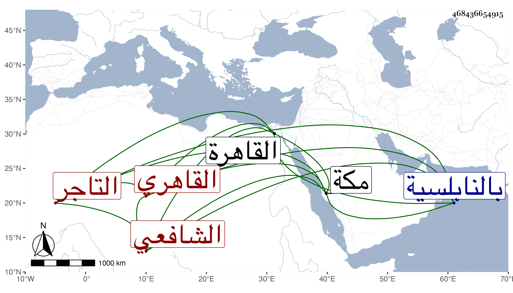

0902Sakhawi.DawLamic.ITO20230111-ara1.EIS1600.468436654915
Biography ID: 468436654915
أحمد بن بعد الرزاق بن عثمان الشهاب القاهري التاجر الشافعي ويعرف بابن النحاس حرفة أبيه المنتقل عنها إلى التجارة المقتدي صاحب الترجمة بأبيه فيها بحيث حصل دنيا طائلة يقال أنها عشرة آلاف دينار مع اشتغاله بالعلم عند المحلى والمناوي والعبادي والحناوي وابن قديد في الفقه والنحو وغيرهم وتميز بحيث ذكر بعض الطلبة بمكة والقاهرة ، كل هذا مع يبس وحبس يد ولذا ضاع جل ما حصل أو جميعه على يد ولده في السبب ونحوه ، وقد حج كثيرا وجاور غير مرة ورجع في سنة تسعين قاضي المحمل لكون قاضيه في تلك السنة وهو أبو الحجاج الأسيوطي تخلف عن الركب مجاورا ثم لم يلبث أن تزوج أم حافظ الدين المنهلي وصار يبيت معها بالنابلسية . ومولده في يوم الاثنين ثالث رمضان سنة أربع وعشرين .
